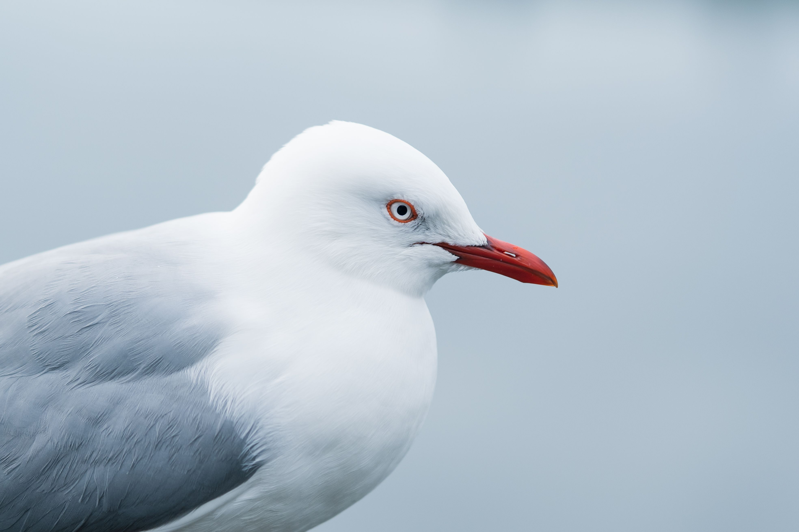

The Silver Gull is a common Australian gull with a white body, pale grey wings, black wing tips and a red bill. It is highly adaptable and occurs around beaches, estuaries, harbours, lakes and cities. Its ability to exploit food around humans has made it one of Australia's most familiar gulls.